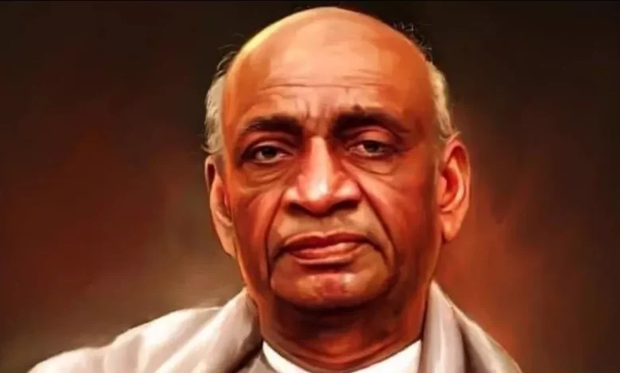

Sardar Vallabhbhai Patel

-
Birth and Early Life:
- Born on October 31, 1875, in Nadiad, Gujarat.
- Studied law in England and became a barrister.
-
Role in Indian Independence:
-
Joined the Indian National Congress and became a prominent
leader in the Indian independence movement.
-
Worked closely with Mahatma Gandhi, especially in the Kheda and
Bardoli Satyagrahas.
-
Leadership in Movements:
-
Played a crucial role in the Non-Cooperation Movement
(1920-1922) and the Civil Disobedience Movement (1930-1934).
- Actively participated in the Quit India Movement (1942).
-
Iron Man of India:
-
Known as the "Iron Man of India" for his strong leadership and
determination.
-
Instrumental in the integration of over 500 princely states into
the Indian Union post-independence.
-
First Deputy Prime Minister and Home Minister:
-
Served as the first Deputy Prime Minister and Home Minister of
independent India from 1947 to 1950.
-
Ensured the political integration and administrative
reorganization of the newly independent nation.
-
Statue of Unity:
-
The world's tallest statue, the Statue of Unity, was unveiled in
his honor in Gujarat in 2018.
-
Symbolizes his contribution to the unity and integrity of India.
-
Death:
- Passed away on December 15, 1950, in Bombay (now Mumbai).
-
Legacy:
- Remembered as a key architect of modern India.
-
His birthday, October 31, is celebrated as National Unity Day in
India.
For more info Wikipedia. Devloped By Ronit Motivaras